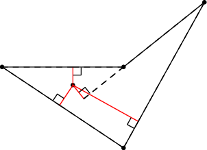

Jan is throwing darts into a polygon painted on the wall. His aim is really lousy. We will assume that the points he hits are uniformly distributed inside the polygon.
(Formally, let A be the area of the polygon. Given any part of the polygon with area B, the probability that Jan hits the given part is B∕A.)
Each time Jan throws a dart, Monika measures the altitudes from the point where the dart landed onto all sides of the polygon. In other words, for each side of the polygon she measures the distance between the dart and the line that contains the given side. She then adds all the distances together and announces the result.

Monika computes the total length of the red lines in the image.
Problem specification
Given is the polygon. Compute the expected value of the number Monika will calculate.
(If you do not know what an expected value is, imagine it as the average of very many attempts.)
Input specification
The first line of the input file contains an integer T specifying the number of test cases. Each test case is preceded by a blank line.
Each test case starts with a line containing the number of vertices N. Each of the next N lines contains two integers: the coordinates of one point. You may assume that N ≤ 500 and that all polygons are simple: the boundary of a polygon never touches or intersects itself.
The polygons in the easy input are special: They are convex, N is even, and each pair of opposite sides is parallel.
Output specification
For each test case output a single line with the expected value of the sum of all distances. The number must be printed with sufficiently many decimal places (we recommend 10 or more). Answers that have an absolute or relative error at most 10−9 will be accepted.
Example